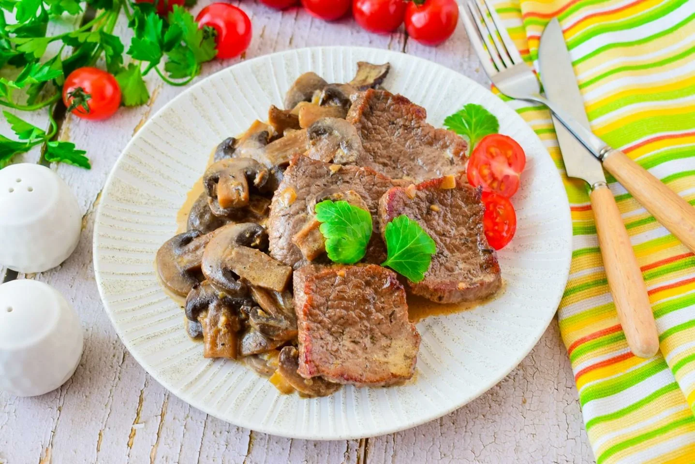

Телятина с грибами в сливочном соусе
Назад

Рецепт:
Ингредиенты (на 2 порции)
- Телятина — 400 г;
- Грибы (белые, шампиньоны или лисички) — 100 г;
- Лук репчатый — ½ шт.;
- Сливки (20–22% жирности) — 300 мл;
- Мука пшеничная — 40 г;
- Мускатный орех — 4 г (щепотка);
- Чеснок — 1 зубчик;
- Сливочное масло — 30 г;
- Соль — ½ ч. ложки;
- Чёрный перец молотый — ¼ ч. ложки.
Пошаговый рецепт
- Подготовьте мясо. Нарежьте телятину длинными полосками. Чтобы мясо получилось особенно сочным, обсушите
его бумажным полотенцем перед обжаркой.
- Обжарьте телятину. На сковороде растопите сливочное масло и обжарьте мясо. Слегка посолите. Снимите сковороду с огня
и отставьте в тёплое место — мясо пока отложите.
- Приготовьте соус. Мелко нарежьте лук, чеснок и один средний белый гриб (если используете другие грибы, нарежьте их так же).
- Обжарьте овощи. В небольшом сотейнике растопите немного сливочного масла, обжарьте лук и чеснок до
прозрачности (важно не пережарить, чтобы не подгорело).
- Добавьте муку и сливки. Всыпьте муку и тщательно перетрите деревянной лопаткой, чтобы не было комочков. Влейте
сливки, снова перемешайте. Посолите, поперчите. Если соус получился слишком густым, разбавьте его небольшим количеством горячей кипячёной воды.
- Добавьте грибы и мускатный орех. Положите грибы, перемешайте. Добавьте щепотку мускатного ореха. Постоянно помешивая, варите на маленьком огне
около 5 минут. Консистенция соуса должна стать похожей на сметану.
- Соедините всё вместе. Вылейте готовый соус в сковороду с обжаренным мясом. Перемешайте, соскребая со стенок все выделившиеся из мяса соки.
- Дайте постоять. Снимите с огня и оставьте под крышкой примерно на 10 минут.
Подача
Подавайте телятину горячей. В качестве гарнира отлично подойдёт картофельное пюре, макароны
или свежие овощи. Можно посыпать свежей зеленью — например, петрушкой.
Приятного аппетита!